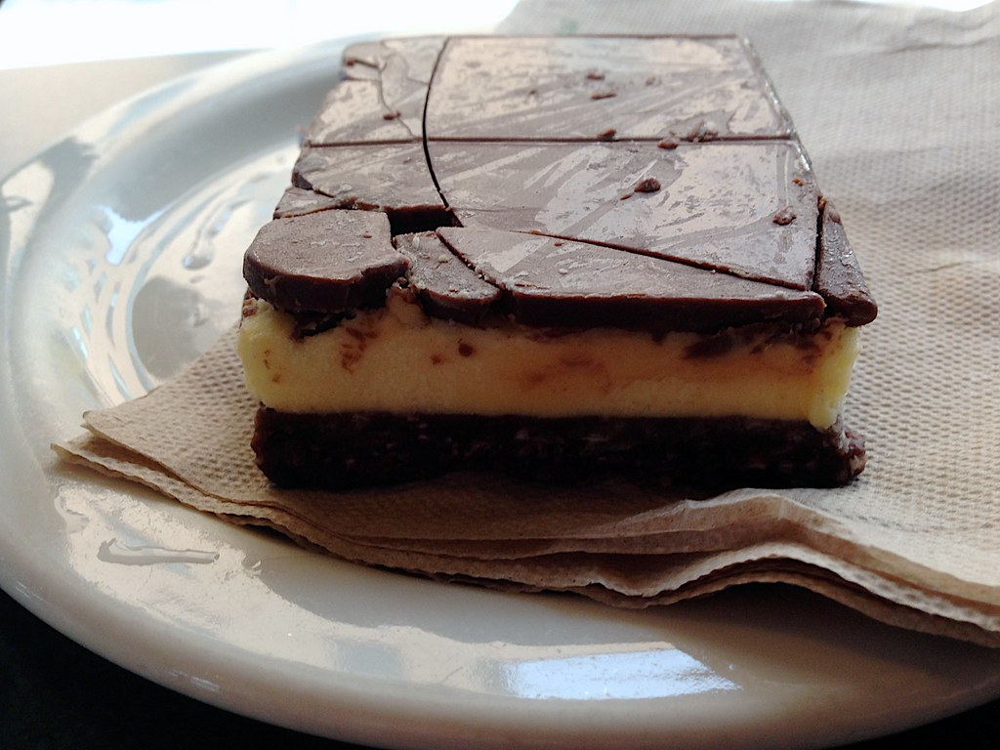

This recipe is adapted from "allrecipes.com," submitted by user: jowolf2

Photo By: Alan Levine, CC BY-SA 2.0 https://creativecommons.org/licenses/by/2.0/, via Flickr
Ingredients List
2 ½ cups crushed chocolate cream-filled sandwich cookies (such as OREO® Cookies)
½ cup butter, melted
¼ cup chopped pecans
½ cup flaked coconut
4 (8 ounce) packages cream cheese, softened
1 cup white sugar
¼ cup custard powder (such as Bird's® Custard Powder)
4 eggs
6 (1 ounce) squares semisweet chocolate
½ cup heavy cream
Equipment
Oven
Bowl
Large Mixing Bowl
Electric Hand Mixer
9"x13" baking dish
Saucepan
Spatula
Refrigerator
Directions
Preheat an oven to 350 degrees F (175 degrees C).
Stir together the cookie crumbs, melted butter, pecans, and coconut in a bowl until the mixture is well combined. Press into the bottom of a 9x13-inch baking dish, and refrigerate while making filling.
Beat cream cheese, sugar, and custard powder in a large bowl with an electric mixer until light and fluffy, and beat in eggs, 1 at a time, beating each until fully incorporated before adding the next. Layer the filling over the crust.
Bake in the preheated oven until the center is almost set, about 40 minutes. Refrigerate the cheesecake until fully cold, at least 3 hours.
Melt the semisweet chocolate in a saucepan over very low heat with the cream, and stir until the mixture is smooth and well blended. Pour the chocolate mixture over the cheesecake, spread with a spatula to cover the middle layer, and refrigerate until the topping is firm, 15 to 20 minutes. Serve cold. Store leftovers in refrigerator.